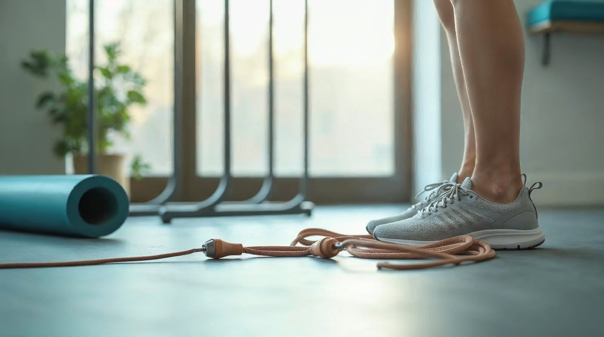
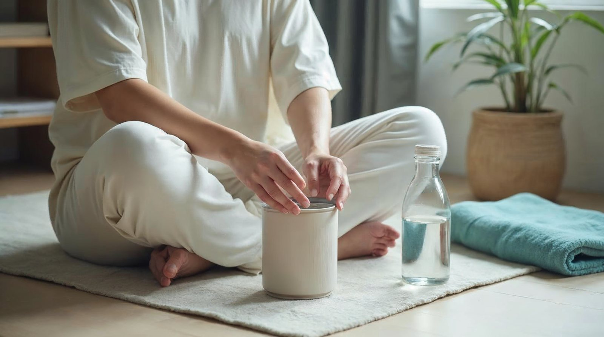

이종호 한의사 감수좋은꿈참사랑한의원 대표원장 (한의사 면허번호 19769)발행 2026-11-24 · 수정 2026-11-25
이 글의 차례
필기시험을 마치고 체력시험 준비를 시작합니다. 몇 달 동안 책상 앞에만 있던 몸으로 운동장에 나가, 첫날부터 몇 바퀴를 뜁니다. 숨은 차도 버틸 만합니다. 다음 날도, 그다음 날도 뜁니다.
그런데 사흘째 아침, 계단을 내려가는데 정강이 안쪽이 욱신거리고 종아리가 돌처럼 단단합니다. 무릎 앞도 시큰합니다. 시험 날짜는 다가오는데 쉬자니 불안하고, 뛰자니 아픕니다.
경찰·소방처럼 체력시험이 있는 시험을 준비하는 분들은 필기 공부 뒤 체력 준비를 몰아서 하는 경우가 있습니다. 그래서 달리기 연습을 시작하고 며칠 만에 무릎과 정강이, 종아리가 아프다는 이야기를 진료실에서 자주 듣습니다.
남은 시간이 얼마 없는데 쉬면 기록이 떨어질까 봐 겁난다는 말씀도 많습니다. 그 조급한 마음을 저도 압니다. 책상 앞에서 버틴 시간이 길었던 만큼, 이제 몸으로 한 번 더 버텨야 한다는 부담이 크실 겁니다.
그래서 저는 멈추라는 말보다 조절하자는 말씀을 먼저 드립니다. 운동량은 일주일에 조금씩만 늘리고, 아픈 날은 강도를 낮추는 것이 시험 전까지 몸을 지키는 기본입니다. 종목과 기준은 시험마다 다르니 응시하는 시험 공고를 먼저 확인하시고, 남은 기간에 맞춰 연습량을 계획해 보세요.
왜 갑자기 늘린 운동이 다리에 남을까요
오래 앉아 지내다 갑자기 달리기를 늘리면 근육과 힘줄, 뼈가 적응할 시간이 부족해 통증이 생기기 쉽습니다. 근육은 비교적 빨리 적응하지만 힘줄과 뼈는 시간이 더 걸린다고 알려져 있습니다. 숨이 덜 차다고 거리를 훌쩍 늘리면, 심장과 폐는 따라가도 다리가 미처 따라오지 못하는 셈입니다.
딱딱한 바닥과 쿠션이 부족한 신발은 정강이와 무릎으로 전해지는 충격을 키울 수 있습니다. 운동장이나 트랙을 한 방향으로만 계속 돌면 한쪽 다리에 부담이 더 실리기도 하고요. 몸을 풀지 않고 바로 뛰거나 운동 뒤 종아리를 늘리지 않으면 다음 날 뭉침이 심해지기도 합니다.
발 아치가 낮은 분이나 예전에 발목을 자주 삐었던 분은 같은 거리를 뛰어도 정강이와 무릎에 부담이 더 실리는 경우가 있습니다.
수험 생활의 조건도 겹칩니다. 잠이 부족하고 끼니를 거르면 같은 운동에도 회복이 더디다고 느끼는 분이 많습니다. 그리고 아픈 부위를 그대로 계속 쓰면 쉬어야 하는 기간이 오히려 길어질 수 있습니다. 시험이 급할수록 놓치기 쉬운 부분이지요.
어디가 아픈지에 따라 살펴볼 것도 다릅니다. 정강이 안쪽이 넓게 아프고, 뛰기 시작할 때 아프다가 몸이 풀리면 덜하고, 운동 뒤 다시 아프다면 달리기를 갑자기 늘린 뒤 흔히 보이는 모습입니다. 반대로 정강이뼈 한 지점이 콕 집어 아프고 누르면 날카롭게 아프거나 걷기만 해도 아프다면, 피로골절 같은 뼈 문제와 나눠 봐야 합니다.
무릎뼈 앞이나 아래가 아프다면 계단 내려가기, 쪼그려 앉기, 점프에서 심해지는지 보고 허벅지 앞 근육과 힘줄을 함께 살핍니다. 무릎 바깥쪽이 오래 달릴수록 아파 온다면 엉덩이 옆과 허벅지 바깥쪽의 긴장을 봅니다. 종아리는 운동 다음 날 뻐근하다가 며칠 사이 풀리는지, 아니면 뛰다가 갑자기 툭 하는 느낌과 함께 아팠는지를 나눠 봅니다.
이런 분들을 자주 뵙습니다
필기시험을 마친 뒤 체력시험까지 남은 몇 주 동안 매일 오래달리기를 몰아서 하는 분이 많습니다. 정강이 안쪽이 아파 오면, 이런 분께는 달리는 날과 쉬는 날을 번갈아 두고 거리를 줄여 다음 날 통증을 적어 보자고 말씀드립니다.
급히 멈추고 방향을 바꾸는 달리기를 되풀이하다 무릎 앞이 시큰해진 분들도 자주 뵙습니다. 횟수를 줄이고, 멈출 때 무릎이 안쪽으로 모이지 않는지 함께 봅니다. 멈추는 순간 무릎만 굽히기보다 엉덩이를 살짝 뒤로 빼며 몸을 낮추는 연습을 해 보시라고도 합니다.
평일에는 하루 종일 앉아 공부하고 주말에만 몰아서 뛰는 분들도 있습니다. 월요일마다 종아리가 단단하게 뭉치고 계단을 내려가기가 힘들지요. 주말에 몰아서 하기보다 평일에 짧게 나눠 하는 쪽으로 계획을 바꿔 보자고 말씀드립니다.
아파도 시험이 가까우니 진통제를 먹고 계속 뛰는 분들도 있습니다. 통증이 가려진 채 같은 부위를 계속 쓰면 더 길게 멈춰야 할 수도 있어, 지금 어느 정도까지는 해도 괜찮은지 함께 정하자고 말씀드립니다.
여럿이 함께 연습하는 분들도 있습니다. 같이 뛰다 보면 내 몸이 따라갈 수 있는 속도보다 빠르게 따라가게 되고, 쉬어야 할 날에도 빠지기가 어렵습니다. 이런 분께는 함께 뛰는 날에도 내 거리와 속도는 따로 정해 두고, 아픈 날에는 그날 계획을 미리 말해 두자고 권합니다.

시험 날짜까지, 이렇게 조절해 봅니다
달리는 거리와 횟수는 일주일에 조금씩만 늘립니다. 아픈 날에는 하던 운동을 70% 정도로 줄이고, 다음 날 불편이 늘지 않으면 다음 주에 조금씩 되돌립니다. 달리는 날 사이에는 쉬는 날을 두어 같은 부위가 회복할 시간을 줍니다.
운동 전에는 가볍게 걷고 몸을 풀고, 운동 뒤에는 종아리를 늘입니다. 벽을 짚고 한쪽 다리를 뒤로 뻗어 뒤꿈치를 바닥에 붙인 채, 종아리가 당기는 느낌을 20~30초 유지하는 식입니다. 운동 뒤 아픈 부위가 뜨겁거나 부었다면 얼음주머니를 수건에 싸서 10~15분 식혀 보세요.
발에 맞는 쿠션이 있는 운동화를 신습니다. 오래 신어 바닥이 한쪽으로 닳았다면 바꾸는 것을 생각해 보세요. 가능하다면 딱딱한 아스팔트보다 트랙이나 흙바닥을 고르고, 트랙을 돈다면 중간에 방향을 바꿔 봅니다. 뛸 때 보폭을 너무 넓혀 뒤꿈치로 쿵쿵 딛기보다, 보폭을 조금 줄이고 발이 몸 가까이에 떨어지게 하면 다리로 오는 충격을 나눌 수 있습니다.
필기 공부 일정과 체력 연습 시간을 한곳에 함께 적어 두면 좋습니다. 잠이 줄어든 주, 시험 일정이 몰린 주에는 강도를 한 단계 낮춥니다. 몸은 공부한 날과 운동한 날을 따로 계산하지 않으니까요.
시험 직전 며칠은 새로운 운동을 시작하거나 무리하게 기록을 재기보다, 익숙한 연습을 가볍게 이어 가며 다리를 아껴 두는 편이 몸도 마음도 덜 흔들립니다. 시험 당일 신을 운동화도 미리 여러 번 신어 발에 익혀 두세요.
혹시 이런 모습이 있으신가요? 최근 2주 사이 달리는 거리나 횟수를 갑자기 크게 늘렸다. 뛰기 시작할 때 정강이나 무릎이 아프다. 운동 다음 날 아침 계단을 내려가기 힘들다. 운동화를 오래 신었다. 잠이 부족하고 끼니를 자주 거른다. 이런 것들은 연습 계획부터 조절해 볼 신호입니다.

잠과 끼니도 연습의 일부입니다
체력시험 준비를 하면서 운동만 늘리고 잠과 끼니는 그대로 두는 분이 많습니다. 그런데 몸은 운동하는 동안이 아니라 쉬고 자는 동안 회복합니다. 필기 공부를 밤늦게까지 하고 새벽에 일어나 뛰는 생활이 이어지면, 연습량을 줄여도 다리가 무겁게 남는 경우가 있습니다. 연습을 늘리는 주에는 잠자리에 드는 시각을 조금 당겨 보세요.
빈속으로 뛰거나 끼니를 거른 채 저녁 연습에 나가는 것도 다리에 부담이 됩니다. 연습 한두 시간 전에는 소화가 편한 것을 가볍게 먹고, 연습 뒤에는 끼니를 거르지 않습니다. 단백질은 한꺼번에 많이 드시기보다 소화가 편한 형태로 나누어 드시는 편을 권합니다. 물은 연습 전후로 나눠 마십니다.
겨울에는 한 가지를 더 챙겨야 합니다. 찬 공기 속에서 몸이 덜 풀린 채 갑자기 속도를 내면 종아리나 허벅지 뒤가 당기기 쉽습니다. 추운 날에는 몸을 데우는 시간을 평소보다 넉넉히 두고, 처음 몇 바퀴는 천천히 뛰세요.
연습 일지도 간단히 써 보시길 권합니다. 날짜, 뛴 거리와 횟수, 연습 중과 다음 날 아침의 통증을 0에서 10까지의 숫자로, 그리고 전날 잔 시간. 이 네 가지만 적어도 어느 날 무리했는지, 잠이 부족한 주에 통증이 늘었는지가 보입니다. 진료 때 그 일지를 함께 보면 남은 기간의 계획을 세우기도 한결 수월합니다.
얼마나 지켜보고, 언제 진료를 받을까요
운동량을 70% 정도로 낮추고 1~2주는 운동 다음 날 통증을 적으며 지켜보세요. 2주가 지나도 같은 자리가 계속 아프거나, 강도를 낮춰도 다음 날 통증이 늘어난다면 상담을 받아 보시길 권합니다. 시험이 몇 주 남지 않았다면 통증이 커지기 전에 일찍 오셔서 남은 기간의 계획을 함께 세우는 편이 좋습니다.
이런 증상은 먼저 확인이 필요합니다
- 뼈 한 지점이 날카롭게 아파 걷기 어렵거나, 뛰다가 툭 하는 느낌 뒤 까치발로 서기 어려운 경우
- 운동 중 가슴 통증이나 심한 숨 가쁨이 있었거나, 한쪽 종아리만 갑자기 붓거나 붉어지는 경우
이런 신호가 있으면 한의원보다 가까운 병원이나 응급실을 먼저 찾으세요.
좋은꿈참사랑한의원에 처음 오시면
처음 오시면 저는 먼저 양손을 내어 달라고 하고 맥을 짚습니다. 맥을 짚으면서 운동량을 언제부터, 얼마나 늘렸는지 여쭙습니다. 아픈 곳이 무릎 앞인지, 정강이인지, 종아리인지, 달릴 때와 계단을 내려갈 때 중 언제 더 아픈지, 운동 전후에 몸을 푸는지도 듣습니다.
시험 날짜와 남은 기간, 준비하는 종목도 함께 여쭙습니다. 공고에 나온 종목과 기준을 알려 주시면 그에 맞춰 이야기를 나눕니다. 잠은 몇 시간쯤 자는지, 끼니는 챙기는지, 몸이 찬 편인지도 여쭙습니다.
이어서 한 발로 서기, 쪼그려 앉기, 발끝으로 서기 같은 동작을 해 보시게 하고, 아픈 부위를 눌러 보며 발목·무릎·골반으로 이어지는 정렬까지 넓게 살핍니다. 필요하다고 판단될 때는 초음파로 힘줄과 근육을 확인합니다.
그렇게 살핀 것을 바탕으로 침·약침·추나·온열 가운데 지금 상태에 맞는 방법을 정합니다. 진료실을 나서기 전에는 이번 주 운동량과 다음 날 확인할 점을 함께 정합니다. 다시 오시면 그사이 연습이 어땠는지 지난 이야기를 이어서 여쭙고, 남은 기간에 맞춰 계획을 다시 맞춥니다.
오실 때 운동량을 늘린 시기와 일주일 운동 계획(거리, 횟수), 아픈 위치(무릎 앞, 정강이 안쪽, 종아리)와 아픈 순간, 신발 종류와 주로 달리는 바닥, 체력시험 날짜와 준비하는 종목을 적어 오시면 이야기가 빨라집니다. 복용 중인 진통제가 있다면 함께 알려 주세요. 연습 때 신는 운동화를 들고 오시면 바닥이 닳은 모양도 함께 볼 수 있습니다.
마치며
몇 달을 책상 앞에서 버티고, 이제 운동장에서 또 한 번 버텨야 하는 시기입니다. 아픈 다리로 뛰면서도 멈추지 못하는 마음, 충분히 이해합니다. 다만 몸은 하루아침에 바뀌지 않고, 조금씩 늘려 갈 때 따라와 줍니다.
오늘은 운동한 거리와 다음 날 아침 다리 상태를 한 줄씩 적어 보세요. 다음에 저를 만나시면 그 기록부터 함께 보며, 시험 날까지 남은 날들을 어떻게 나눌지 이야기하겠습니다.
함께 읽으면 좋은 글
- 한강공원에서 달리기를 하고 나면 무릎 바깥쪽이 아플 때는 어떻게 살피나요?
- 무릎뼈 아래가 아파 점프나 쪼그려 앉기가 불편할 때는 어떻게 살피나요?
- 등산 뒤 종아리가 뭉치고 아플 때 초음파로 무엇을 보나요?

먼저 확인이 필요한 신호
- 뼈 한 지점이 날카롭게 아파 걷기 어렵거나, 뛰다가 툭 하는 느낌 뒤 까치발로 서기…
- 운동 중 가슴 통증이나 심한 숨 가쁨이 있었거나, 한쪽 종아리만 갑자기 붓거나 붉어…
왜 갑자기 늘린 운동이 다리에 남을까요
- 오래 앉아 지내다 갑자기 달리기를 늘리면 근육과 힘줄, 뼈가 적응할 시간이 부족해…
- 근육은 비교적 빨리 적응하지만 힘줄과 뼈는 시간이 더 걸린다고 알려져 있습니다.
이런 분들을 자주 뵙습니다
- 필기시험을 마친 뒤 체력시험까지 남은 몇 주 동안 매일 오래달리기를 몰아서 하는 분…
- 정강이 안쪽이 아파 오면, 이런 분께는 달리는 날과 쉬는 날을 번갈아 두고 거리를…
시험 날짜까지, 이렇게 조절해 봅니다
- 달리는 거리와 횟수는 일주일에 조금씩만 늘립니다.
- 아픈 날에는 하던 운동을 70% 정도로 줄이고, 다음 날 불편이 늘지 않으면 다음…
자주 묻는 질문
아파도 시험이 가까우면 계속 연습해야 하나요?
통증이 심해지면 오히려 준비가 길게 멈출 수 있어, 강도를 조절하며 이어가는 방법을 함께 찾는 것을 권합니다.
시험 직전에도 진료를 받을 수 있나요?
네. 시험 일정을 말씀해 주시면 그에 맞춰 무리 없는 방법을 함께 정합니다.
쉬는 날에는 아예 움직이지 말아야 하나요?
아픈 부위에 부담이 적은 걷기나 가벼운 자전거처럼 강도를 낮춘 움직임은 이어가도 되는 경우가 많습니다. 무엇이 괜찮을지는 아픈 곳을 보고 함께 정합니다.
체력시험 연습은 언제부터 시작하는 것이 좋을까요?
종목과 기준은 시험마다 달라 응시하는 시험 공고를 먼저 확인하세요. 몸이 적응할 시간이 필요하니, 필기 공부와 함께 짧게라도 미리 시작해 몇 주에 걸쳐 조금씩 늘려 가는 것을 권합니다.
진료 시간은 어떻게 되나요?
좋은꿈참사랑한의원은 평일 09:30~20:00(점심 13:00~14:00), 토·일·공휴일 09:30~15:00에 진료합니다.
좋은꿈참사랑한의원은 재진 때 지난번 이야기부터 이어서 여쭙니다. 진료시간과 예약은 오시는 길에서 확인하세요.
어디서 상담받을 수 있나요?
좋은꿈참사랑한의원은 서울 동작구 만양로2길 2 신성빌딩 3층·5층(서울 동작구 상도동, 7호선 상도역 3번 출구 근처)에 있습니다. 한의사 3명(이종호 대표원장, 조영기 수석진료원장, 정원영 진료원장)이 진료합니다. 진료시간은 평일 09:30~20:00(점심 13:00~14:00), 토·일·공휴일 09:30~15:00이며, 방문 전 전화로 확인을 권합니다. 예약은 네이버 예약, 카카오톡 상담, 전화 02-815-7510로 받습니다.
이 글은 일반적인 건강 정보이며 개인의 진단이나 치료를 대신하지 않습니다. 증상이 있거나 복용 중인 약이 있다면 진료를 통해 확인하세요. 치료 효과는 개인마다 다를 수 있습니다.
작성 기준: 일반적으로 알려져 있는 건강 정보를 참고해 정리했습니다(대표원장 감수). 증상 기록은 1~2주 동안 하루 1회, 비슷한 시간에 적어 오시면 지난 상태와 비교하기 쉽습니다.